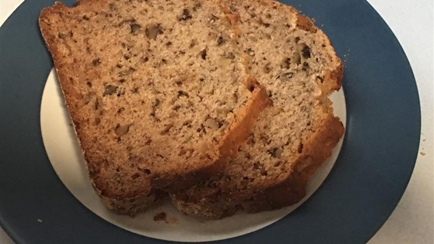

Banana Bread

Banana Bread is a great way to use bananas that have been sitting around too long.
When they get too brown just put them in the freezer until you have enough to make some.
This is a basic recipe that many things can be added to (chocolate chips are nice) from
here.
Ingredients
- 2 cups (500ml) flour
- 1t (5ml) baking soda
- 1/4t (1ml) salt
- 1/2 cup (125ml) butter
- 3/4 cup (187ml) brown sugar
- 2 eggs
- 2 1/3 cups (583ml) mashed overripe bananas
Method
Preheat oven to 350 degrees F (175 degrees C). Lightly grease a 9x5 inch loaf pan.
In a large bowl, combine flour, baking soda and salt.
In a separate bowl, cream together butter and brown sugar.
Stir in eggs and mashed bananas until well blended.
Stir banana mixture into flour mixture; stir just to combine.
Pour batter into prepared loaf pan.
Bake in preheated oven for 60 to 65 minutes, until a toothpick inserted into center of the loaf comes out clean.
Let bread cool in pan for 10 minutes, then turn out onto a wire rack.